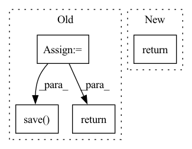

Pattern ID :1312
Before Change
// return image
img = Image.fromarray(feature).convert("RGB")
tmpfile = NamedTemporaryFile(suffix=".png", delete=False)
imagePath = tmpfile.name
img.save( imagePath)
return imagePath
def getStatisticData(self):
get statistic dataAfter Change
feature = np.concatenate((feature, zeroPad))
feature = feature.reshape((width, width))
return feature.tolist()
def getStatisticData(self):
get statistic dataIn pattern: SUPERPATTERN
Frequency: 6
Non-data size: 4
Instances Fragment ID: 6390693
Project Name: thu-vis/jittorvis
Commit Name: cef33919bab0ad9128960de88408dcc8bef50b90
Time: 2021-11-02
Author: wangzw834@163.com
File Name: backend/data/dataCtrler.py
M Class Name: DataCtrler
N Class Name: DataCtrler
M Method Name: getFeature(3)
N Method Name: getFeature(3)
M Parent Class: object
N Parent Class: object
M File Name: backend/data/dataCtrler.py
N File Name: backend/data/dataCtrler.py
M Start Line: 109
M End Line: 131
N Start Line: 131
N End Line: 131
Before Change
def resize_and_convert(img, size, resample, quality=100):
img = trans_fn.resize(img, size, resample)
img = trans_fn.center_crop(img, size)
buffer = BytesIO()
img.save( buffer, format="jpeg", quality=quality)
val = buffer.getvalue()
return val
def resize_multiple(img, sizes=(128, 256, 512, 1024), resample=Image.LANCZOS, quality=100):After Change
if(img.size[0] != size):
img = trans_fn.resize(img, size, resample)
img = trans_fn.center_crop(img, size)
return img
def image_convert_bytes(img): Fragment ID: 6390692
Project Name: janspiry/image-super-resolution-via-iterative-refinement
Commit Name: f31ba80bf1ca1a081fb62bc12f58ee6ff518a9bd
Time: 2021-07-29
Author: jiangliangwei@tetras.com
File Name: prepare_data.py
M Class Name: AnonimousClass
N Class Name: AnonimousClass
M Method Name: resize_and_convert(3)
N Method Name: resize_and_convert(4)
M Parent Class:
N Parent Class:
M File Name: prepare_data.py
N File Name: prepare_data.py
M Start Line: 13
M End Line: 20
N Start Line: 14
N End Line: 17
Before Change
n_samples = 0
ep = ep + 1 // add 1 to make it intuitive
cur_valid_path = os.path.join(valid_path, f"{ep}")
os.makedirs(cur_valid_path, exist_ok=True)
get_scores = Evaluate()
torch.cuda.empty_cache()
for i, data in enumerate(tqdm(dataloader)):
input_frames, target_frames, target_t, name = data
input_frames = input_frames.cuda().float()
target_frames = target_frames.cuda().float()
target_t = target_t.cuda().float()
b = target_frames.shape[0]
n_samples += b
with torch.no_grad():
pred = model(input_frames, target_t)
iter_scores = get_scores(pred, target_frames)
for key, value in iter_scores.items():
scores[key] += value.sum()
// save reconstructed image
for i in range(b):
to_pil_image(pred[i].cpu()).save( os.path.join(cur_valid_path, f"{name[i]}.png"))
torch.cuda.empty_cache()
for key, value in scores.items():
scores[key] = value / n_samples
print(f"Validation at Epoch {ep} === PSNR: {scores["psnr"].item():.2f}\tSSIM: {scores["ssim"].item():.4f}\tMS-SSIM: {scores["ms_ssim"].item():.4f}\nLPIPS: {scores["lpips"].item():.4f}\tDISTS: {scores["dists"].item():.4f}")
model.train()
return scores, cur_valid_path
After Change
print(f"Validation at Epoch {ep} === PSNR: {scores["psnr"].item():.2f}\tSSIM: {scores["ssim"].item():.4f}\tMS-SSIM: {scores["ms_ssim"].item():.4f}\nLPIPS: {scores["lpips"].item():.4f}\tDISTS: {scores["dists"].item():.4f}")
print("=======================================\n\n")
model.train()
return scores
Fragment ID: 6390695
Project Name: jhlew/softsplat-full
Commit Name: db2f42961dd2d9789269ba41ad4421653729ccfa
Time: 2022-11-07
Author: fudojhl@gmail.com
File Name: validation.py
M Class Name: AnonimousClass
N Class Name: AnonimousClass
M Method Name: validation(4)
N Method Name: validation(4)
M Parent Class:
N Parent Class:
M File Name: validation.py
N File Name: validation.py
M Start Line: 67
M End Line: 98
N Start Line: 65
N End Line: 101
Before Change
def localize_file_from_url(self, target):
response = requests.get(target, stream=True)
temp_dir = tempfile.mkdtemp()
if response.status_code == 200:
image = Image.open(io.BytesIO(response.content))
image_path = "{}/image.png".format(temp_dir)
image.save( image_path)
return image_path
else:
return None
After Change
elif "html" in content_type:
return self.download_url_html(response)
else:
return None
else:
return None
Fragment ID: 6390694
Project Name: superinsight/superinsight-db
Commit Name: 1eda8ba2d9024cdf04874725f6e4955ddc021ff4
Time: 2023-01-11
Author: csnelsonchu@gmail.com
File Name: src/predict/transformers/common/helper.py
M Class Name: CommonHelper
N Class Name: CommonHelper
M Method Name: localize_file_from_url(2)
N Method Name: localize_file_from_url(2)
M Parent Class:
N Parent Class:
M File Name: src/predict/transformers/common/helper.py
N File Name: src/predict/transformers/common/helper.py
M Start Line: 31
M End Line: 37
N Start Line: 46
N End Line: 55
Before Change
def resize_and_convert(img, size, resample, quality=100):
img = trans_fn.resize(img, size, resample)
img = trans_fn.center_crop(img, size)
buffer = BytesIO()
img.save( buffer, format="jpeg", quality=quality)
val = buffer.getvalue()
return val
def resize_multiple(img, sizes=(128, 256, 512, 1024), resample=Image.LANCZOS, quality=100):After Change
if(img.size[0] != size):
img = trans_fn.resize(img, size, resample)
img = trans_fn.center_crop(img, size)
return img
def image_convert_bytes(img): Fragment ID: 6390699
Project Name: janspiry/image-super-resolution-via-iterative-refinement
Commit Name: 2102acb5c88eef281357ba2a810b72b0f9b6ea71
Time: 2021-07-29
Author: lw_jiang@foxmail.com
File Name: prepare_data.py
M Class Name: AnonimousClass
N Class Name: AnonimousClass
M Method Name: resize_and_convert(3)
N Method Name: resize_and_convert(4)
M Parent Class:
N Parent Class:
M File Name: prepare_data.py
N File Name: prepare_data.py
M Start Line: 13
M End Line: 20
N Start Line: 14
N End Line: 17
Before Change
),
) -> Path:
image = self.model.generate_image(text, seed, grid_size=grid_size)
out_path = Path(tempfile.mkdtemp()) / "output.jpg"
image.save( str(out_path))
return out_pathAfter Change
handle_intermediate_image=handle_intermediate_image
)
return handle_intermediate_image(-1, image) Fragment ID: 6390698
Project Name: kuprel/min-dalle
Commit Name: 73f4a47fb57a90b3ae91b306bdd2e3e3aa806e11
Time: 2022-07-04
Author: brkuprel@gmail.com
File Name: replicate/predict.py
M Class Name: Predictor
N Class Name: Predictor
M Method Name: predict(5)
N Method Name: predict(4)
M Parent Class: BasePredictor
N Parent Class: BasePredictor
M File Name: replicate/predict.py
N File Name: replicate/predict.py
M Start Line: 28
M End Line: 31
N Start Line: 27
N End Line: 48